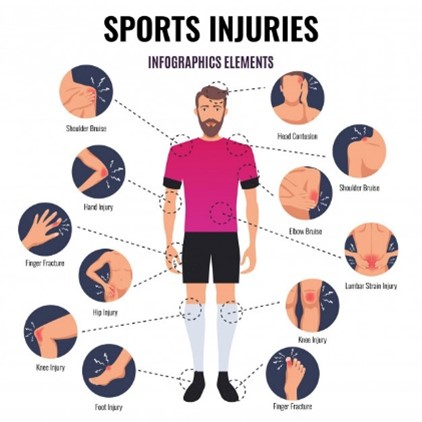

Last updated 30 Jan 2021
Types of sport injuries

Common/major sport injuries
• Knee injuries
The knee is a very complicated joint, and it endures a lot of impact and wear during most sports activities — and for this reason, we’ve given it its own category for possible injuries. Tears of the anterior cruciate ligament (ACL) are quite common, as are cartilage tears, dislocation and fractures. Knee injuries can be painful and debilitating, sometimes requiring surgery to correct. Again, warm-ups, stretches and good posture can reduce the risk of knee injuries, along with proper padding and bracing (for instance, while playing contact sports). https://youtu.be/TTTkQNceToY (yt video)
Group members experiences: My experience on knee injuries in sports is when my knee ligament torn during playing futsal at Arena Futsal Centre. The incident happened in a blink of an eye. I assume that the injury is not really serious and take it easy by simply reducing the pain with ice. but day by day my knees got worse and harder for me to walk. then my housemate advised me to see a doctor and get proper treatment at the hospital. so with this experience I would like to share with others about the importance of knowing about this injury, how to deal with it and also how to treat them.
• Sprains
Sprains are to ligaments what strains are to muscles. Ligaments are the tissues that connect bone to bone. When these ligaments turn in a wrong way, they can pull or tear. Ankle sprains are perhaps the most frequent type of sprain among athletes, followed closely by knee sprains, wrist and elbow sprains, etc. Sprains can be painful, take longer to heal than strains, and sometimes require immobilization to protect against further injury. Pre-workout stretches and warmups can help deter sprains, as well as practicing good technique in the sport you’re playing. Sprains often leave the ligament week and susceptible to future sprains, so if you have a history of spraining a knee or ankle, for example, it would be good idea to support that joint with a brace while playing. https://youtu.be/5A9dTcoEV7c (yt video)
Group members experiences: The sprained ankle is common in tennis due to quick lunges and changes of direction. In most cases the injury is caused by landing with too much weight on the outside of the foot and the ankle rolls over and the foot turns in (like falling off a curb). My worse experience is when i was 16 and it was the first time i played on a grass court, during the game I slipped when i was running. That time i experienced the ankle sprain and I couldn’t run that much until now.
• Back injuries/back pain
Your back and spinal column undergoes some level of stress with almost every sports activity. Over time, this stress may accumulate into inflammation around the vertebrae and back muscles, sometimes causing injuries to the discs and frequently causing upper or lower back pain. Sometimes a sudden jarring impact may also cause an acute injury to the back. Back treatments vary widely depending on the condition, ranging from rest to physical therapy to surgery. The best way to reduce your risk of back pain and injury is to keep your back muscles strong and flexible with regular low-impact activities, warmups and even good diet. https://youtu.be/6ka6EhF1rM0 (yt video)
Group members experiences: I usually go to the gym if I have free time. By lifting the weight, it can help me to reduces stress and make my life healthier. But if I usually overtrained my back muscles will hurt and I must take a break from going to the gym. If it has a serious cases or back pain, you should go to see the doctor or the experts.